PASS
Sub-cycle scope: hero band at 1280 / 768 / 375 and logo-grid wrap at 768. All other deltas marked out-of-scope for future sub-cycles (8.1, 8.3, 8.4, 8.5, 8.6).
* Hero crop deltas are dominated by a known ~30 px vertical offset between live and preview hero content (hero whitespace, slated for sub-cycle 8.4). Same headline, same wrap, same CTAs — pixel-by-pixel offset inflates the AE count. See "What I see different" below for plain-English breakdown.
Plain-English summary of every visible delta between the live homepage and the canonical preview at the three breakpoints. Items in scope for 8.2 drive the verdict; items out of scope are noted for future sub-cycles.
compare -metric AE compares pixel-by-pixel at the same coordinates. Because live has ~30 px more whitespace above the hero kicker than preview, every glyph in the live hero is offset downward by that amount relative to the same glyph in the preview hero. Each offset glyph reads as "different" on a per-pixel basis even though the rendered text, line-wrap, and layout are visually identical. Drag the wipe-slider comparators below — the hero content is the same; the vertical position differs. That position fix is sub-cycle 8.4's job. For sub-cycle 8.2, the binding evidence is (1) no horizontal scroll at any viewport, (2) H1 wraps cleanly within 768, and (3) logo grid wraps to multiple rows at 768. All three confirmed.
| Acceptance check | Source | Result |
|---|---|---|
| 768 px horizontal scroll eliminated (was: clipped past right edge) | T's Playwright: docScrollWidth=753, docClientWidth=768, hasHorizontalScroll=false | PASS |
| 1280 px horizontal scroll absent (no regression) | T's Playwright: docScrollWidth=1265, docClientWidth=1280 | PASS |
| 375 px horizontal scroll absent (no regression) | T's Playwright: docScrollWidth=360, docClientWidth=375 | PASS |
| 768 px H1 wraps within container (no clipped words) | S screenshot capture t3-homepage-768-live-hero-20260509.png | PASS |
| 768 px logo grid wraps to multiple rows | S screenshot capture t3-homepage-768-live-logogrid-20260509.png — visible 2 rows × 3 logos | PASS |
| 1280 px logo grid single-row (no regression) | S screenshot capture t3-homepage-1280-live-logogrid-20260509.png — single row | PASS |
Hero padding-inline: 0 applied (matches preview spec) | T's Playwright at all viewports: heroPadInline: 0px | PASS |
| 375 px H1 still 44 px (mobile not regressed) | T + F Playwright: fontSize 44px, letterSpacing -1px | PASS |
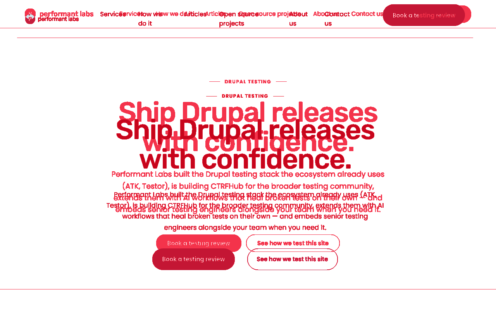
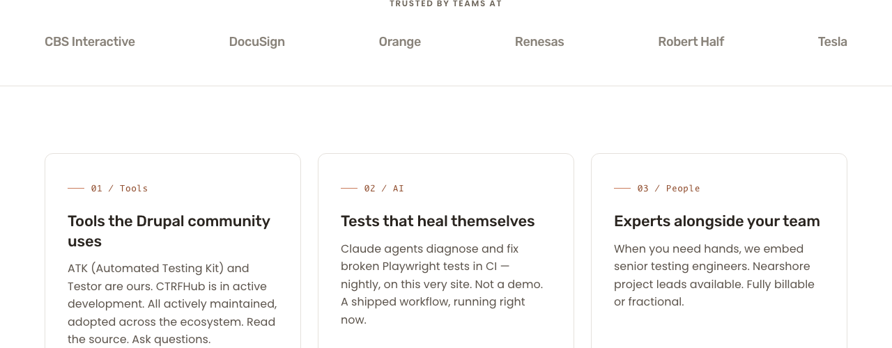
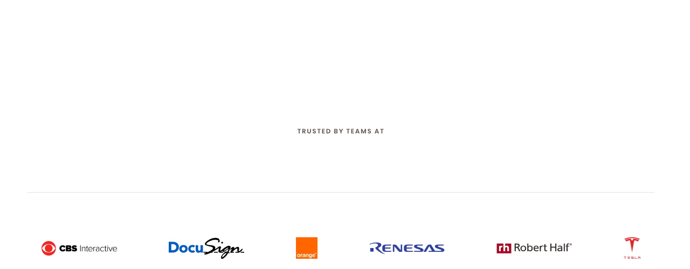
Both single-row at 1280 (no regression on 8.2's wrap fix). Logo treatment difference (bitmap vs text) is Phase 8.3 scope.
The original Phase 8 audit reported "H1 overflows past the right viewport edge" at 768. Live now wraps cleanly within the viewport. Verified.
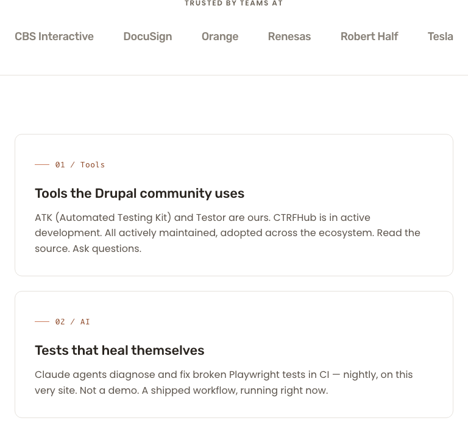
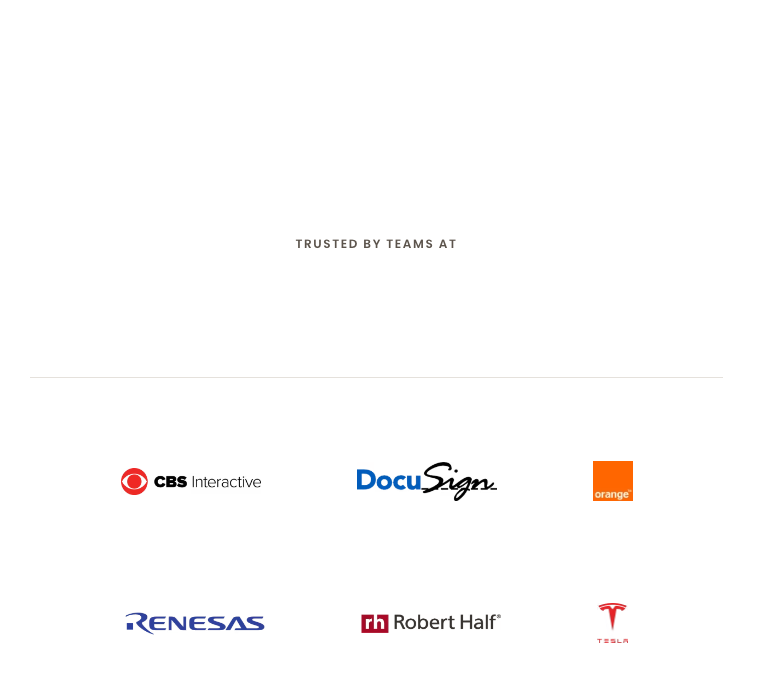
Live wraps to two rows of three (CBS Interactive / DocuSign / Orange; Renesas / Robert Half / Tesla). Pre-fix it overflowed the viewport horizontally. The wrap behavior is the 8.2 deliverable. Bitmap-vs-text logo treatment is Phase 8.3 scope and explains the visual delta — but it does NOT affect the 8.2 wrap verdict.
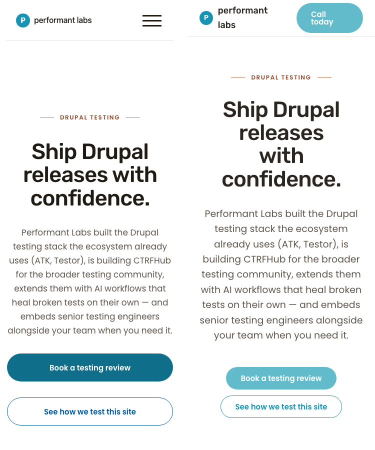
| Section | Viewport | Status | Description |
|---|---|---|---|
| Hero band — H1 wrap & overflow | 768 | MATCH (in scope) | Live wraps headline cleanly within 768 viewport. No horizontal scroll. The 8.2 fix is working. |
| Hero band — H1 wrap & overflow | 1280 | MATCH (in scope) | Live and preview both render headline as two lines, "Ship Drupal releases" / "with confidence." |
| Hero band — H1 wrap & overflow | 375 | MATCH (in scope) | Live H1 at 44 px wraps to 4 lines within the 375 viewport. No regression. |
| Hero band — vertical position / whitespace | 1280, 768, 375 | DELTA (out of scope) | Live hero content sits ~30 px lower than preview at 1280, ~125 px lower at 768. Slated for sub-cycle 8.4 (hero whitespace). |
| Logo grid — overflow / wrap | 768 | MATCH (in scope) | Live wraps to 2 rows × 3 logos. Pre-fix it overflowed horizontally. The 8.2 fix is working. |
| Logo grid — overflow / wrap | 1280 | MATCH (in scope) | Live remains single-row at 1280. No regression on the wrap-fix. |
| Logo grid — logo treatment | 1280, 768, 375 | DELTA (out of scope) | Live shows bitmap vendor logos; preview shows uniform text logos. Slated for sub-cycle 8.3. |
| Header / nav | 1280, 768, 375 | DELTA (out of scope) | Live = full menu + solid blue CTA. Preview = light nav + teal pill. Slated for sub-cycle 8.1. |
| Hero CTA buttons (Book a testing review / See how we test this site) | 1280, 768, 375 | DELTA (out of scope) | Live = solid teal + outlined deep-blue. Preview = filled teal + outlined teal. Button-component polish. |
| Below-the-fold sections (cards, FAQ, footer-CTA, footer) | 1280, 768, 375 | DELTA (out of scope) | Sub-cycles 8.4 / 8.5 / 8.6 have not run yet. Expected. |
| Viewport | Live height | Preview height | AE pixels | Whole-page delta |
|---|---|---|---|---|
| 1280 | 5784 px | 4341 px | 3,897,430 | 70.14% |
| 768 | 6546 px | 4829 px | 2,277,210 | 61.40% |
| 375 | 7899 px | 6166 px | 1,346,970 | 58.25% |
Whole-page deltas are informational only. Live pages are 25–33% taller than preview because below-the-fold sections (cards, FAQ, footer-CTA, footer) have not been brought to parity. ImageMagick's compare truncates to the shorter image, so live's first 4341 px is being compared against the entire preview — different sections line up against each other and produce maximally divergent output. This metric is NOT the verdict input for sub-cycle 8.2.
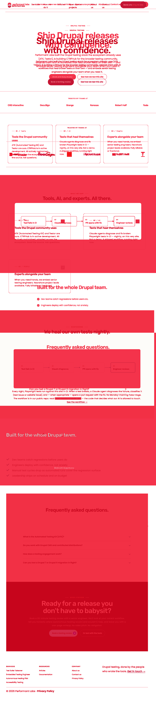
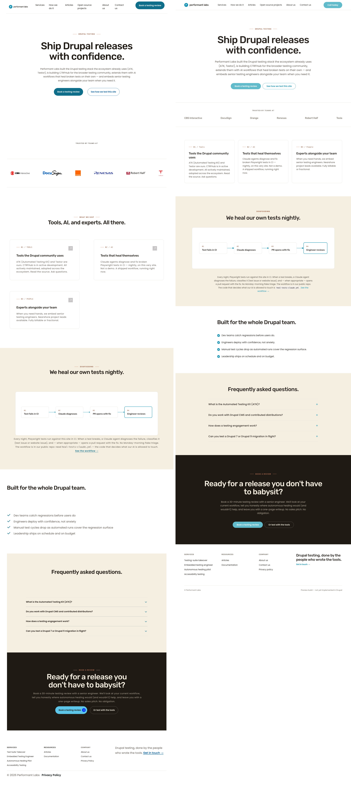
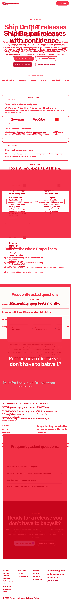
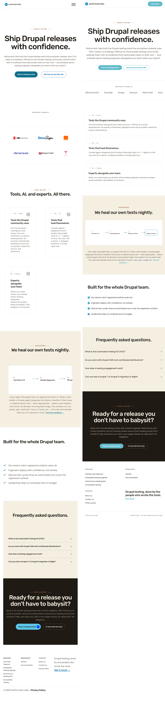
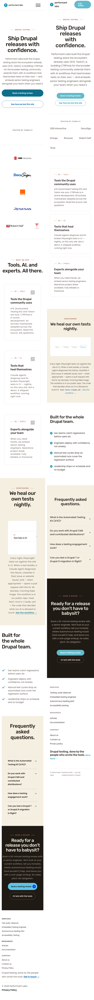
PASS for sub-cycle 8.2.
The two specific bugs in scope (768 px hero overflow + logo-grid nowrap overflow) are fixed and visually verified. No regressions introduced at 1280 or 375. All other deltas the diff highlights belong to other sub-cycles (8.1 header, 8.3 logo treatment, 8.4 hero whitespace, button polish, below-the-fold parity) and are tracked separately. Operator may commit and proceed to the next sub-cycle.